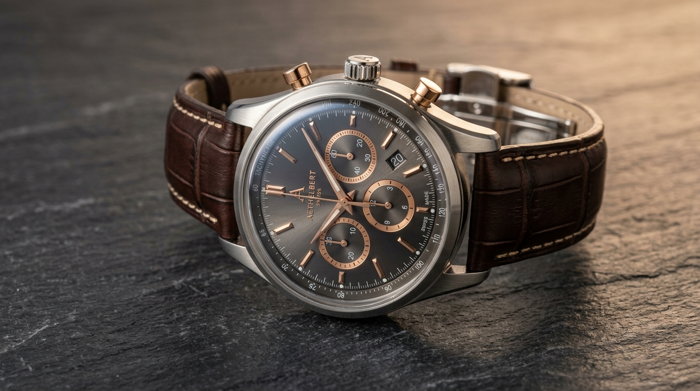

Metallurgy · 18K Gold
Understanding 18K Gold Alloys
Why 75% purity remains the gold standard for luxury jewelry balance between rich color and durability.
An expert guide to fine jewelry, watches, craftsmanship, materials, movements and the essentials that preserve them.
Essential educational insights into metallurgy, complications, and gemological integrity.
Why 75% purity remains the gold standard for luxury jewelry balance between rich color and durability.

An engineering breakdown of traditional high-grade chronograph actuation vs cam-actuated levers.

How mechanical cams and 122-year lunar gears calculate irregular months and leap years without batteries.

An examination of high-altitude Himalayan deposits, rutile needle character, and hand-pierced platinum openwork.
How to identify table reflections, culet alignment, and optical clarity using an achromatic 10x triplet.
Discover historical craftsmanship across rings, necklaces, gemstones, and precious metals.
Octagonal emerald cuts, micro-pavé halos, and platinum prong architecture.
Explore Rings →
Graduated sapphires, cascading diamonds, and concealed safety clasps.
Explore Necklaces →
Mohs hardness diagnostic, Colombian emeralds, Ceylon sapphires, and Pt 950.
Explore Gemology →From ultra-thin dress calibres to saturation dive instruments and haute horlogerie tourbillons.
Pure hand-wound mainspring energy celebrated for slim profiles and visible bridge decoration.
View Calibres →Kinetic oscillating rotors capturing wrist motion to continuously replenish the power barrel.
View Calibres →Precision split-second timekeeping via column wheels, horizontal clutches, and tachymeters.
View Calibres →ISO 6425 compliance, helium escape valves, 300M+ water seals, and ceramic elapsed bezels.
View Calibres →Inspect how mechanical, automatic, quartz, and tourbillon movements transfer power to the escapement.
Examine mineral hardness on the Mohs scale, refractive index, and expert preservation standards.
Precision tools engineered to inspect, clean, calibrate, and protect fine heirlooms and timepieces.
Triplet bonded lens system eliminating chromatic aberration for diamond clarity and movement inspection.
Tempered 60 HRC tool steel micro-fork for switching bracelets without scratching polished watch lugs.
Whisper-quiet Mabuchi motors maintaining automatic complications and perpetual calendars at ideal TPD.
Authoritative essays for collectors, connoisseurs, and first-time luxury buyers.
Why static lab depth ratings differ from dynamic arm strokes, and how screw-down crowns protect movements.
A deep comparative study of alloy chemistry, weight density, scratch resilience, and heirloom patina.
Join thousands of horologists, fine jewelry enthusiasts, and discerning collectors who rely on Aurelle for technical clarity and unbiased reference specifications.